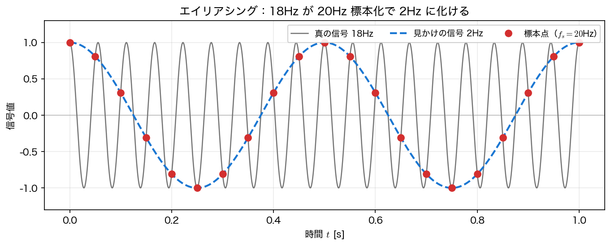
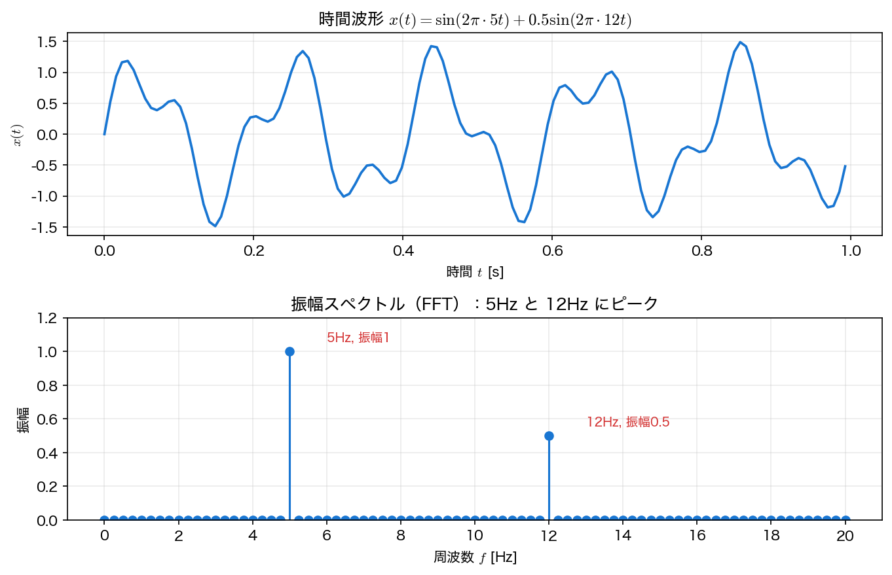

標本化と FFT
フーリエ変換は連続な積分で定義されるが、計算機が扱えるのは 有限個の標本 だけである。本ページでは、連続信号を標本化するときの基本定理（ナイキスト・エイリアシング）、離散版の DFT、それを高速化する FFT、そして numpy.fft の使い方を扱う。
標本化と標本化定理
連続信号 \(x(t)\) を一定間隔 \(\Delta t\) ごとに測ることを 標本化（サンプリング） という。\(\Delta t\) を 標本化間隔、その逆数 \(f_s=1/\Delta t\) を 標本化周波数 と呼ぶ。
標本化で重要なのが 標本化定理（サンプリング定理） である。
標本化定理（ナイキスト）
信号が \(f_{\max}\) より高い周波数成分をもたない（帯域制限されている）とする。標本化周波数が
を満たせば、標本列から元の連続信号を 完全に復元できる。境界となる \(f_s/2\) を ナイキスト周波数 と呼ぶ。
「完全に復元」の意味
この主張が言うのは、\(-\infty<n<\infty\) の 無限個の正確な標本 \(x(n\Delta t)\) と理想的な sinc 補間
を使えば元の連続信号が復元できる、ということである。実際に手元にあるのは有限個・有限桁の標本なので、区間の端では誤差が残る。また現実の信号は厳密には帯域制限されていないので、標本化の前にアナログの低域通過フィルタ（アンチエイリアシングフィルタ）で \(f_s/2\) 以上を落としておくのが実務の定石である。
つまり、興味のある最高周波数の 2倍より速く 測れば情報は失われない。逆に、これを破ると次の現象が起きる。
エイリアシング
ナイキスト周波数 \(f_s/2\) を 超える 周波数成分は、標本化すると低い周波数に 化けて 現れる。これを エイリアシング（折り返し） と呼ぶ。見かけの周波数は
で与えられる。たとえば \(f=18\) Hz の信号を \(f_s=20\) Hz（ナイキスト \(10\) Hz）で標本化すると、\(\lvert 18-20\rvert=2\) Hz の信号と標本点が 完全に一致 し、\(2\) Hz の波にしか見えなくなる。
import numpy as np
n = np.arange(0, 40)
xs = np.cos(2 * np.pi * 18 * n / 20) # 真の 18Hz を fs=20Hz で標本化
xa = np.cos(2 * np.pi * 2 * n / 20) # 見かけの 2Hz
print(f"max|標本(18Hz) - 標本(2Hz)| = {np.max(np.abs(xs - xa)):.2e}")
# -> max|...| = 1.88e-14 （標本点では区別できない）

離散フーリエ変換（DFT）
\(N\) 個の標本 \(x_0,x_1,\dots,x_{N-1}\)（間隔 \(\Delta t\)）に対する 離散フーリエ変換（DFT） と逆変換を次で定義する。
各 \(X_k\) は周波数
の成分に対応する。実信号では \(k>N/2\) が負の周波数（＝折り返し）にあたるので、意味のある片側の範囲は
である。\(N\) が偶数なら最後の \(k=N/2\) がちょうどナイキスト周波数 \(f_s/2\) に対応するが、\(N\) が奇数なら片側は \(k=0,\dots,(N-1)/2\) までで ナイキスト成分は存在しない（np.fft.rfftfreq が返す長さは \(\lfloor N/2\rfloor+1\) で、この違いを自動で処理してくれる）。ここから2つの実務的な量が読み取れる。
- 周波数分解能：\(\displaystyle \Delta f=\frac{f_s}{N}=\frac{1}{N\Delta t}=\frac{1}{T_{\text{obs}}}\)。観測時間 \(T_{\text{obs}}\) が長いほど細かく分解できる。
- 片側振幅：実信号では、振幅 \(A\) の正弦波は \(\pm f\) に半分ずつ分かれる。片側だけ見るときの振幅は \(\dfrac{2\lvert X_k\rvert}{N}\)。ただし 直流 \(k=0\) と、\(N\) が偶数のときの ナイキスト \(k=N/2\) は対になる負の周波数をもたないので \(\dfrac{\lvert X_k\rvert}{N}\) とする。
FFT（高速フーリエ変換）
DFT を定義どおり計算すると、\(N\) 個の \(X_k\) それぞれに \(N\) 回の積和が必要で \(O(N^2)\) かかる。FFT（Fast Fourier Transform） は、\(N\) が合成数のとき DFT を約数ごとに分割して計算量を下げるアルゴリズムである。
最も基本的な Cooley–Tukey の radix-2 法は、\(N\) が偶数のとき偶数番目と奇数番目の標本に分けることで、長さ \(N\) の DFT を長さ \(N/2\) の DFT 2つに帰着させる。
この2分割を最後まで繰り返せるのは \(N=2^m\) のときで、そのとき \(\log_2 N\) 段で計算が終わる。\(N\) が \(2\) のべき乗でない合成数（例：\(N=12=4\times3\)）でも、素因数ごとに同じ分割（mixed-radix）ができるので \(O(N\log N)\) は保たれる。\(N\) が大きな素数のときだけは別の手法（Bluestein 法など）が必要になる。numpy.fft はこれらを自動で使い分けるが、\(N\) を \(2\) のべき乗に取ると最も速い。
\(N=10^6\) なら、演算回数は \(N^2=10^{12}\) に対し \(N\log_2 N\approx 2\times10^7\) で、主要演算回数の比は約5万倍になる。ただしメモリアクセスやキャッシュの効き方が違うため、実測の速度比はこれと一致するとは限らない（次ページで実測する）。それでもこの桁違いの高速性が、信号処理・数値解析・データ駆動科学を実用にしている。
numpy.fft の使い方
NumPy には実装済みの FFT がある。実数信号には片側だけを返す rfft が便利である。
import numpy as np
fs = 128.0 # サンプリング周波数 [Hz]
T = 4.0 # 観測時間 [s]
N = int(fs * T) # サンプル数
t = np.arange(N) / fs
x = 1.0 * np.sin(2*np.pi*5*t) + 0.5 * np.sin(2*np.pi*12*t)
X = np.fft.rfft(x) # 実信号 → 片側スペクトル（長さ ⌊N/2⌋+1）
freq = np.fft.rfftfreq(N, 1/fs) # 対応する周波数軸 [Hz]
amp = 2 * np.abs(X) / N # 片側振幅
amp[0] /= 2 # 直流は対になる負の周波数がないので 2 倍しない
if N % 2 == 0:
amp[-1] /= 2 # ナイキストも同様（N が偶数のときだけ存在）
for fpk in (5, 12):
k = np.argmin(np.abs(freq - fpk))
print(f"{fpk:2d}Hz: 振幅 {amp[k]:.4f} (Δf = fs/N = {fs/N:.4f} Hz)")
# 例外処理が要ることの確認：直流とナイキストだけの信号
for name, y in [("DC ", np.ones(8)),
("Nyquist ", np.cos(np.pi * np.arange(8)))]:
Y = np.fft.rfft(y)
a = 2 * np.abs(Y) / 8
a[0] /= 2
a[-1] /= 2
print(f"{name}: 補正なし {2*np.abs(Y).max()/8:.1f} 補正あり {a.max():.1f} (真値 1.0)")
5Hz: 振幅 1.0000 (Δf = fs/N = 0.2500 Hz)
12Hz: 振幅 0.5000 (Δf = fs/N = 0.2500 Hz)
DC : 補正なし 2.0 補正あり 1.0 (真値 1.0)
Nyquist : 補正なし 2.0 補正あり 1.0 (真値 1.0)
振幅スペクトルが、合成に使った \(5\) Hz（振幅 \(1.0\)）と \(12\) Hz（振幅 \(0.5\)）を正しく分離・定量できている。後半の確認が示すとおり、直流とナイキストに \(2\) を掛けたままにすると振幅が 2 倍に出てしまう ので、この 2 点だけは必ず補正する。

実務上の注意：分解能とスペクトル漏れ
- 周波数分解能は \(\Delta f=f_s/N\)。隣り合う周波数を分けたいなら 観測時間を伸ばす（\(N\) を増やす）。
- 信号の周期が観測区間に 整数回収まらない と、ピークが周囲ににじむ スペクトル漏れ（リーケージ） が起きる。窓関数（Hann 窓など）で緩和できる（第4回 スペクトル解析で扱う）。
- 単に点数を増やす ゼロ詰め はスペクトルを見かけ上滑らかにするが、分解能 \(\Delta f\) そのものは改善しない。
まとめ
- 標本化周波数 \(f_s\) と ナイキスト周波数 \(f_s/2\)。帯域制限された信号を \(f_s>2f_{\max}\) で測れば（無限個の標本と sinc 補間のもとで）復元可能（標本化定理）。
- \(f_s/2\) を超える成分は低周波に化ける（エイリアシング）。\(18\)Hz@\(20\)Hz → \(2\)Hz を数値で確認した。
- DFT は標本に対するフーリエ変換。周波数格子 \(f_k=k f_s/N\)、分解能 \(\Delta f=f_s/N\)、片側振幅 \(2\lvert X_k\rvert/N\)（直流と、\(N\) が偶数のときのナイキストだけは \(\lvert X_k\rvert/N\)）。
- FFT は DFT を \(O(N\log N)\) で計算する（radix-2 の再帰が最後まで使えるのは \(N=2^m\)）。
numpy.fft.rfft/rfftfreqでスペクトルが求まる。
本講義との接続
FFT は本講義全体の中心的な道具になる。次ページでは FFT を使った 高速畳み込みと相互相関 を扱い、第4回ではスペクトル解析（窓関数・パワースペクトル）とその応用としての フィルタリング へ進む。また周波数領域での「掛け算」は ラプラス変換と伝達関数（第6〜8回）に、時空間データのモード分解は 動的モード分解 DMD（第14回）につながる。